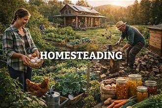

Why Homesteading?
We chose to start homesterading to take control over the food that we eat.

How?
In March of 2026 we purchased 22.7 acres of land in West Tennessee. The idea was to provide healthy and nutritious food for the 5 generation in our family.
All our trials
We should have done a little more research on buying wooded acerage versus cleared acerage.
- Home Home
- Animals Our Animals
- About About Our Homestead